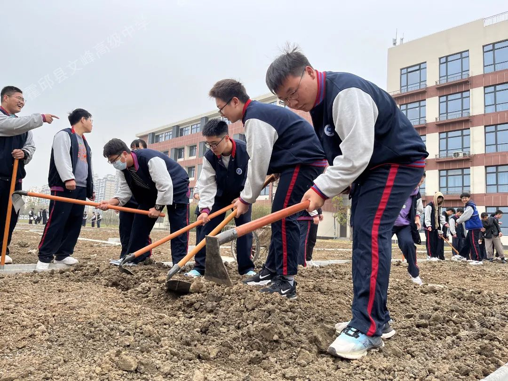
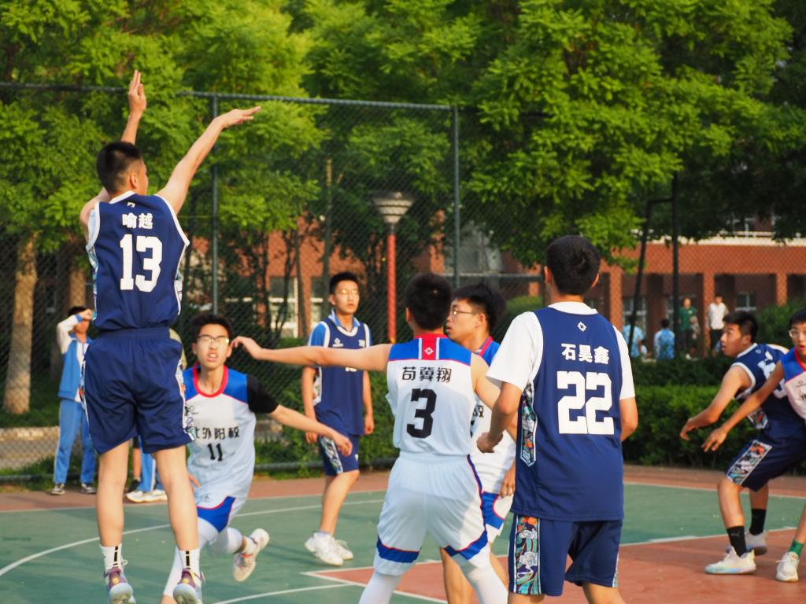
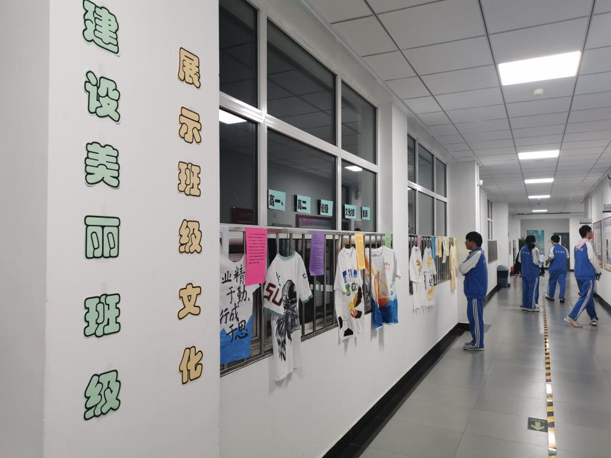
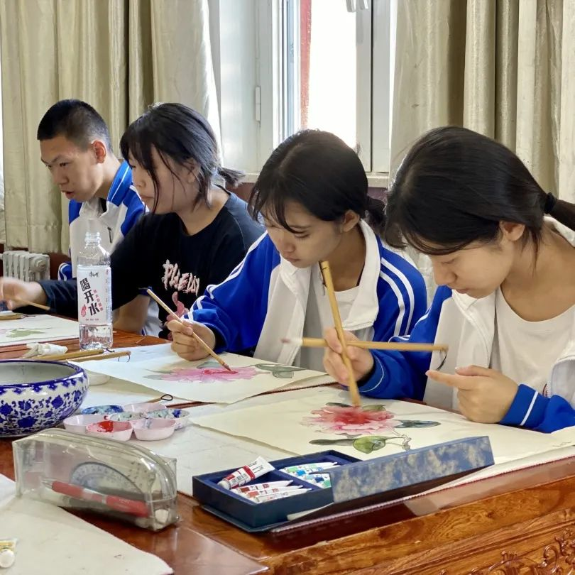
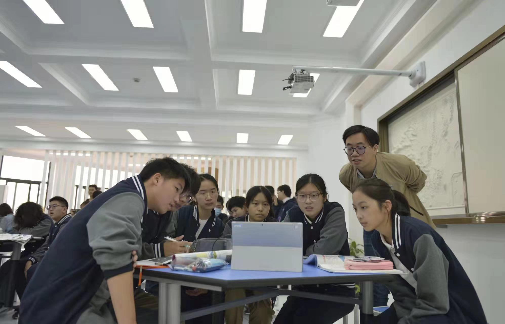

避免"唯时间论"
拒绝无效内卷
当学习时长超过 14 小时后，继续压缩休息时间带来的收益极低，还会导致生理与心理问题。与其做无效重复，不如精简部分时间做高效学习，把更多的时间留给睡眠、运动与心理调节
第四部分
回归科学备考的本质
用时间堆砌的内卷，从来都不是获得高分、提升录取率的核心
教育资源的差异、学习方法的效率、个人心态的稳定
也是决定高考结果的关键因素
当学习时长超过 14 小时后，继续压缩休息时间带来的收益极低，还会导致生理与心理问题。与其做无效重复，不如精简部分时间做高效学习，把更多的时间留给睡眠、运动与心理调节
学生与家长应正视本省的高考竞争格局，制定符合自身实际的目标预期，避免盲目与教育资源优势地区的学生对比，减少不必要的焦虑
学校应跳出"用时长换成绩"的强制模式，关注学生的身心健康与全面发展，也可倡导职业教育等培养理念，避免学生为无意义的内卷付出健康代价，真正实现"减负不减效"
从政策层面来看，"双减"政策向高三阶段的延伸，有着极为重要的现实意义
通过规范学校作息管理、优化高校招生的区域分配、打击违规复读与校外培训乱象
能够有效缓解高三学生的内卷焦虑
同时引导社会认知从"关注分数"转向"关注学生全面发展"
让高考回归立德树人、人才选拔的本质，而非一场时间堆砌的无效内卷




